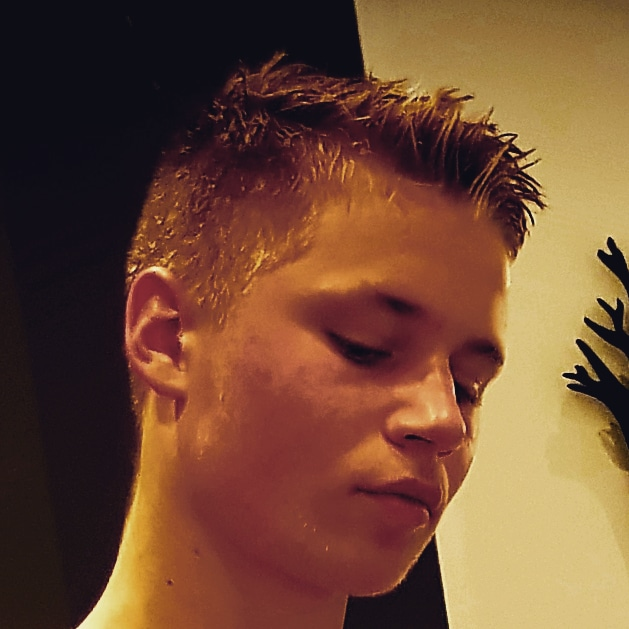
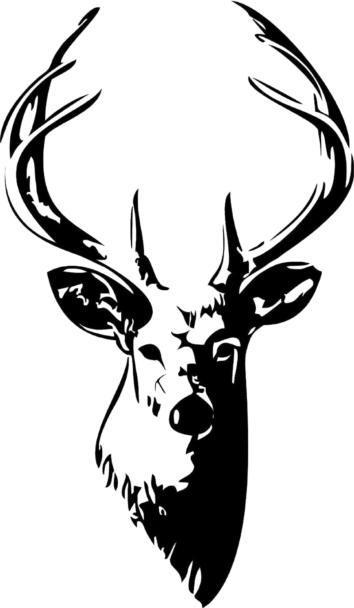

Um mig
Ég heiti Benóný Helgi Benónýsson og er 16 ára.
Ég fæddist árið 2003, 27 ágúst.
Ég er að mennta mig í Tækniskólanum og er á tölvubraut.Mynd af mér:
Mynd 1
Hljóðskrá
Áhugamál: Fótbolti
Áhugamálið mitt er fótboltiMynd 2

Verkefni 5
Ég heiti Benóný Helgi Benónýsson og er 16 ára.
Ég fæddist árið 2003, 27 ágúst.
Ég er að mennta mig í Tækniskólanum og er á tölvubraut.

© 2019 Benóný Helgi Benónýsson